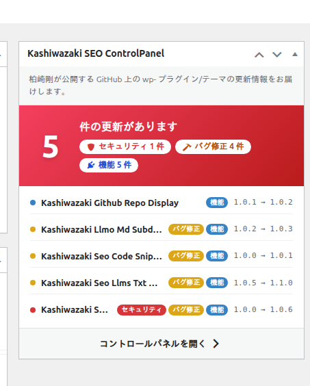
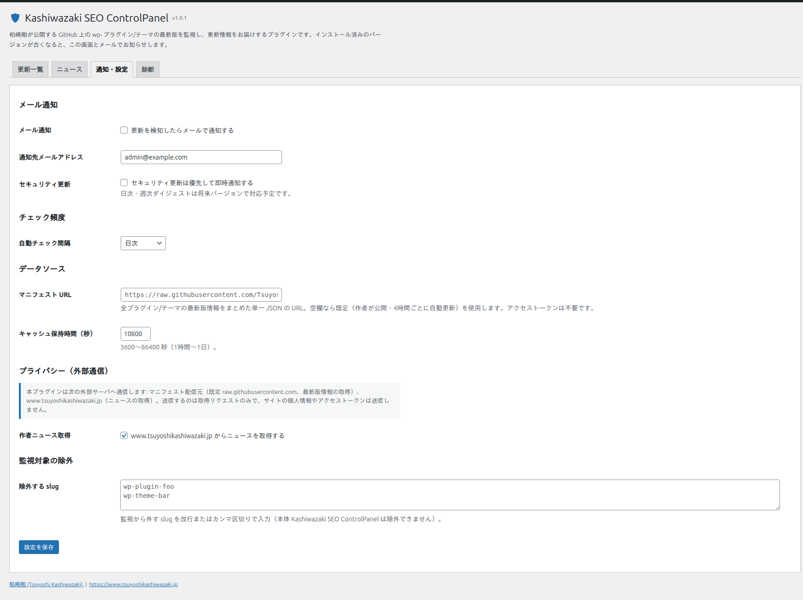
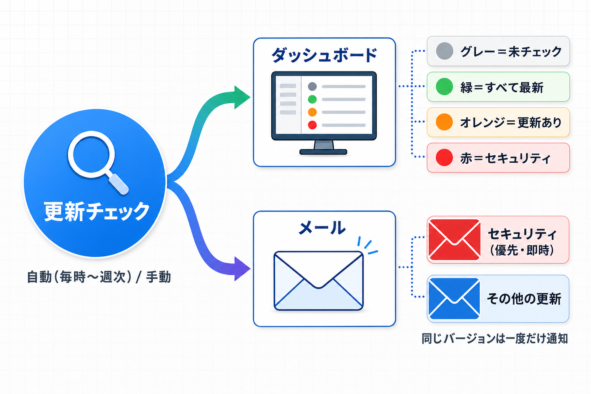

通知（メール・ダッシュボード）
更新の検知結果は、WordPress ダッシュボードのウィジェットとメールの 2 経路でお知らせします。それぞれの見方と設定を解説します。
ダッシュボードウィジェット
WordPress 管理画面のトップ（ダッシュボード）に、更新状況のサマリウィジェットが表示されます。

4 つの状態
| ヒーローの色 | 状態 |
|---|---|
| グレー | まだチェックを実行していない |
| 緑 | すべて最新（更新なし） |
| オレンジ | 更新あり（セキュリティ更新は含まない） |
| 赤 | セキュリティ更新を含む更新あり |
表示内容
- 件数バッジ: 更新件数の内訳を「セキュリティ / バグ修正 / 機能」の種類別に表示します。1 つの更新が複数の種類に該当する場合は各バッジに重複して数えられるため、バッジの合計が更新総数を上回ることがあります
- 更新リスト: 更新できる項目を最大 6 件表示（名前・種類タグ・バージョン遷移）。7 件以上ある場合は「ほか N 件」と表示されます
- コントロールパネルを開く: クリックで更新一覧タブへ移動します
メール通知
自動チェックまたは「今すぐチェック」で新しい更新を検知すると、メールで通知します。同じバージョンについての通知は一度だけ送られ、再チェックのたびに同じメールが繰り返し届くことはありません。
設定項目（「通知・設定」タブ）

| 設定 | 既定値 | 説明 |
|---|---|---|
| メール通知 | ON | 更新を検知したらメールで通知します |
| 通知先メールアドレス | 管理者メール | 通知の宛先。無効な値を保存した場合はサイトの管理者メールアドレスに戻ります |
| セキュリティ更新 | ON | セキュリティ更新を優先して即時通知します。ON の場合、セキュリティ更新とそれ以外の更新は別々のメールで届きます |
| 自動チェック間隔 | 日次 | 毎時 / 6 時間ごと / 日次 / 週次 から選択 |
| マニフェスト URL | （空欄=既定） | 監視データ源の JSON の URL。通常は変更不要です |
| キャッシュ保持時間（秒） | 10800（3 時間） | マニフェストのキャッシュ時間。3600〜86400 秒の範囲で指定 |
| 作者ニュース取得 | ON | ニュースタブの取得 ON/OFF（作者ニュース参照） |
| 除外する slug | （空） | 監視から外したい項目の slug を改行またはカンマ区切りで指定。本体は除外できません |
メールの内容
- 件名:
[Kashiwazaki SEO ControlPanel] N 件の更新があります。セキュリティ更新を含む場合は先頭に[セキュリティ]が付きます - 本文: サイト名、各項目の種類・現在の版 → 最新版・GitHub の URL、コントロールパネルへのリンク、通知の停止方法
「セキュリティ更新」を ON にしておくと、セキュリティ修正を含む更新だけが独立したメールで届くため、多数の更新に埋もれて見落とす事態を防ぎやすくなります。
